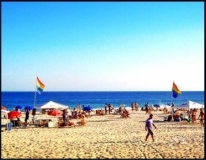
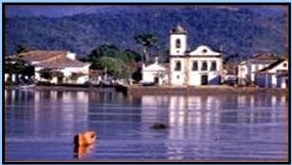
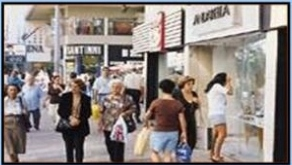
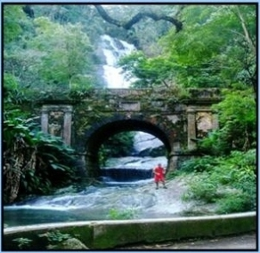
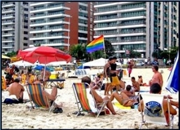

|
Our Guide Services |
|
Our Guides |
|
The Paradise: Rio |
|
Gay Rio At Night |
|
Other Rio Services |
|
Our Pricing Packages |
|
Customer Service |
|
Our Escorts On Video |
|
Who We Are |
The Paradise Called Rio
Rio de Janeiro is one of the world's most beautiful and fascinating cities. No other city in the world combines stunning natural beauty, tropical beaches, and an intense, diverse, vibrant metropolis - all rolled into one package.
When you add to all of that the fact that Rio is also one of the most sexually liberated cities in the world, with a growing gay scene comprised of bars,

nightclubs, and escort-filled saunas - as well as the fact Brazil's weak currency makes everything so incredibly inexpensive for westerners - it is truly difficult to imagine a more ideal locate for the gay traveler.
The unique wonderment of Rio lays in its diversity. You can be at a sprawling, tranquil tropical beach
The unique wonderment of Rio lays in its diversity. You can be at a sprawling, tranquil tropical beach
one minute, and the next minute be eating at one of the city's countless exotic restaurants, or be hiking in a rain forest, or be shopping on Ipanema's fashiinable



Rua Visconde de Piraja, or be adimiring the city's truly innivative architecture, or be paddle-boating on an enormous, bucolic lake (Logoa), or be shopping from nightclubs to theaters to bars an saunas. The wonderment of Rio is that all of these wildly disparate places are literally within walking distance of each other!
As unique as the city itself is, you will likely be even more amazed by its inhabitants. As anyone who has visited Rio will tell you, "Cariocas" - the term used by Rio residents to describe themselves - are unique in every way. There is truly no place anywhere whose population can be compared to them.
The first thing you will notice about Cariocas is their unique an exotic plysical beauty. Becouse Brazilians descend from multiple races, their plysical appearence is quite exotic and truly distinct from virtually any other group of people. As you walk down the street, or lie on the beach, you see one gorgeous guy after the next.
While many people associate Rio with the wild festivities of Carnival, the life of a Carioca year-round is a lefe of pleaasure and relaxation - with parties, celebrations, and beach get-togethers part of the standard
As unique as the city itself is, you will likely be even more amazed by its inhabitants. As anyone who has visited Rio will tell you, "Cariocas" - the term used by Rio residents to describe themselves - are unique in every way. There is truly no place anywhere whose population can be compared to them.
The first thing you will notice about Cariocas is their unique an exotic plysical beauty. Becouse Brazilians descend from multiple races, their plysical appearence is quite exotic and truly distinct from virtually any other group of people. As you walk down the street, or lie on the beach, you see one gorgeous guy after the next.
While many people associate Rio with the wild festivities of Carnival, the life of a Carioca year-round is a lefe of pleaasure and relaxation - with parties, celebrations, and beach get-togethers part of the standard
routime. Perfect strangers speak to each other with such warmth an intimacy that
you would swear they were life-long friends.
And the festiveness and tranquility of the Carioca is contagious - after one day in Rio, you will fell yourself slowing down. You'll be ready to enjoy the pleasures of the city and its beaches free of any stress and worry that you may have brought with you. While there are countless attractions which make Rio so unique and so memorable, the charm festiveness, and warmth of the
And the festiveness and tranquility of the Carioca is contagious - after one day in Rio, you will fell yourself slowing down. You'll be ready to enjoy the pleasures of the city and its beaches free of any stress and worry that you may have brought with you. While there are countless attractions which make Rio so unique and so memorable, the charm festiveness, and warmth of the
Carioca - not to mention their staggering beauty - is definitely at the top of the list.

In short, Rio has everything - all of it intense, beautifullan sensual. It is a tropical bezch location, a thriving metropolis, a vibrant cultural center, a Carefree social scene, and a riveting experience at every turn.
And be cause its remote location and Portuguese - speaking population serve as a permanent impediment to invasion by hordes of standard tourist, it is truly the ideal place for travelers who seek unidiscovered, high quality, and unique adventures.